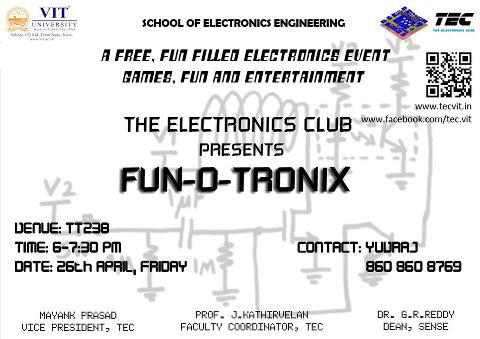
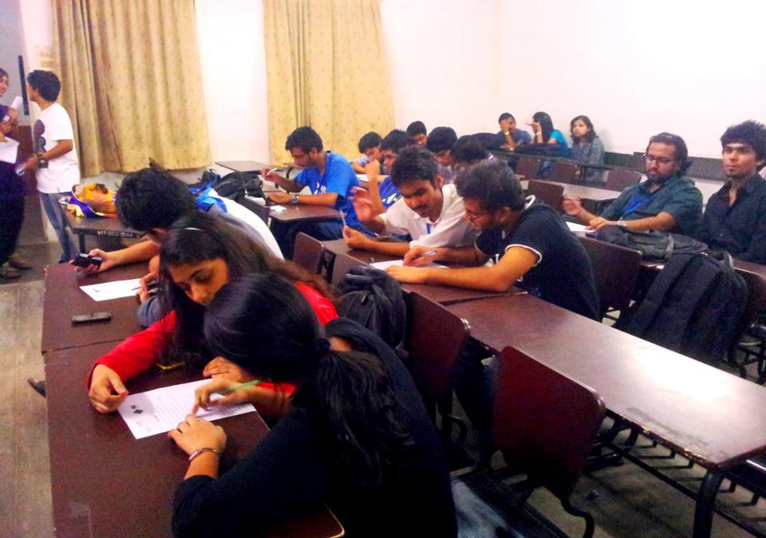

FUN-O-TRONIX:
Event Date : 26/04/2013
Time : 6 pm- 7.30pm
Venue : TT238
Organizer : The Electronics Club(TEC)
Participant Count : 60
Speaker(s) Volunteers : Anshul Gupta , Kadari Harshini , Lavin Khandelwal,
Manali Shah , R.Mukundan , Shriya Agrawal.

Introduction
Fun-O-Tronix was a fun filled competition related to electronics conducted by TEC to show that even electronics can be interesting and to get more and more students interested in electronics. The event was conducted on 26 April 2013 at TT-205 from 1800 hrs to 2000 hrs. It was a team event with each team consisting of 2 members. It consisted of 2 rounds and the winners were declared on the aggregate scores of the 2 rounds.
EVENT DESCRIPTON :-
Round 1 – “ Who am I ”
In this round the participating teams were given a question paper consisting of 15 questions based on identification of basic electronic components on the basis of the clues provided. 10 teams qualified for the second round.
Round 2- “ Coordinated Circuits ”
In this round the two teammates were tied with a rope with two of them facing opposite directions and two tables were placed in front of each of them, one table had a circuit diagram and all associated components, while other had a breadboard. According to the setup only one participant can see the circuit and that person has to pick up a component and hand it over to the other participant explaining him/her where and how is that component supposed to be connected on breadboard. This round tested the component identifying and circuit making skills of the participant. The circuits thus made were evaluated on the basis of number of components correctly evaluated.
RESULTS:-
On the basis of the aggregate scores of the two rounds the team which came first was of Shubham Patel and Saurabh Kothari and the runners up team was of Vishwam Aggarwal and Ayush.

Feedback
The feedback in totality was very appreciating for the club. Participants liked the event and felt that it is one of a kind event and such events should be held more often. They also saw for the first time that electronics and fun are not polar opposites.